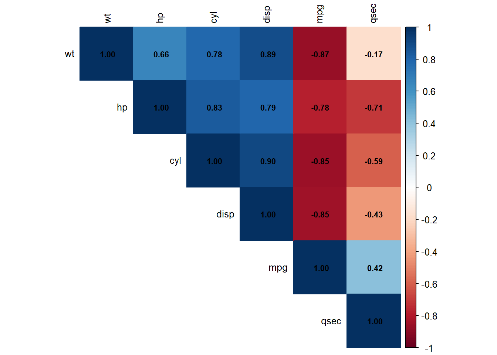
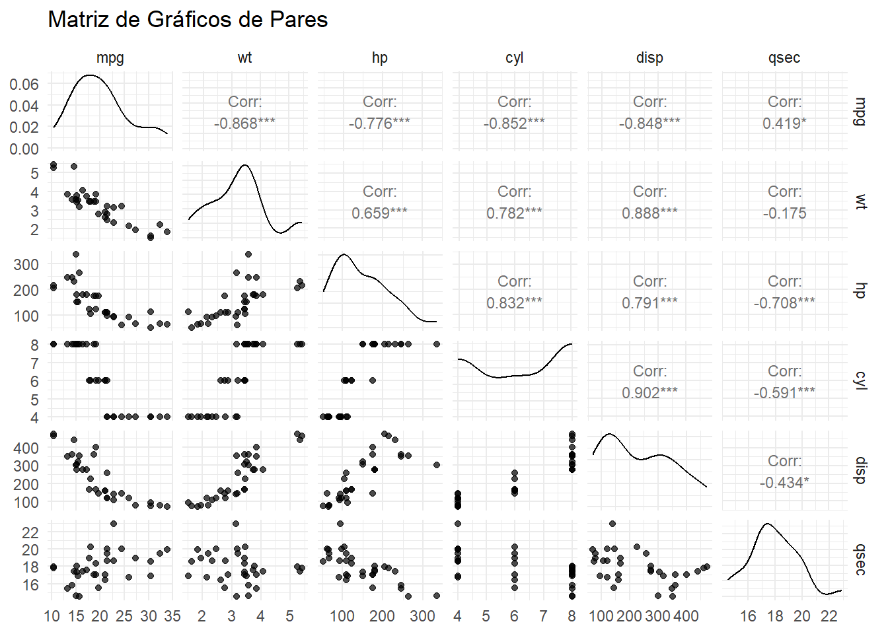
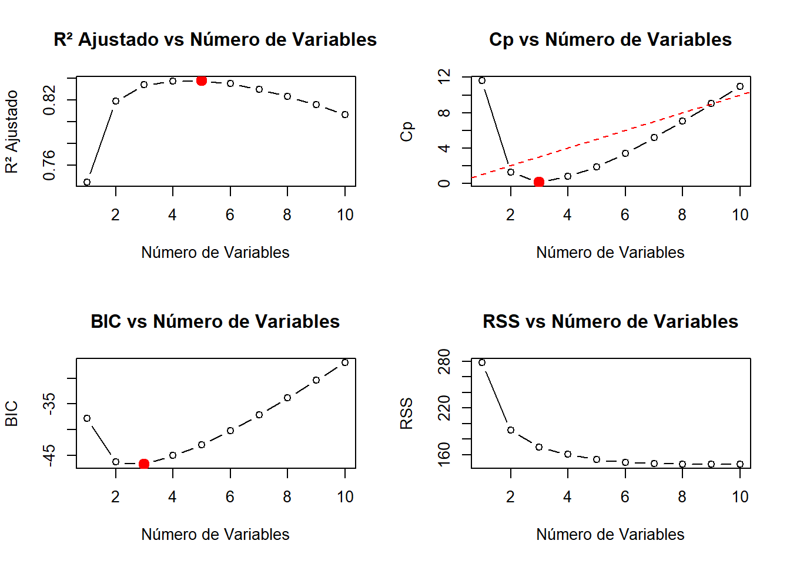
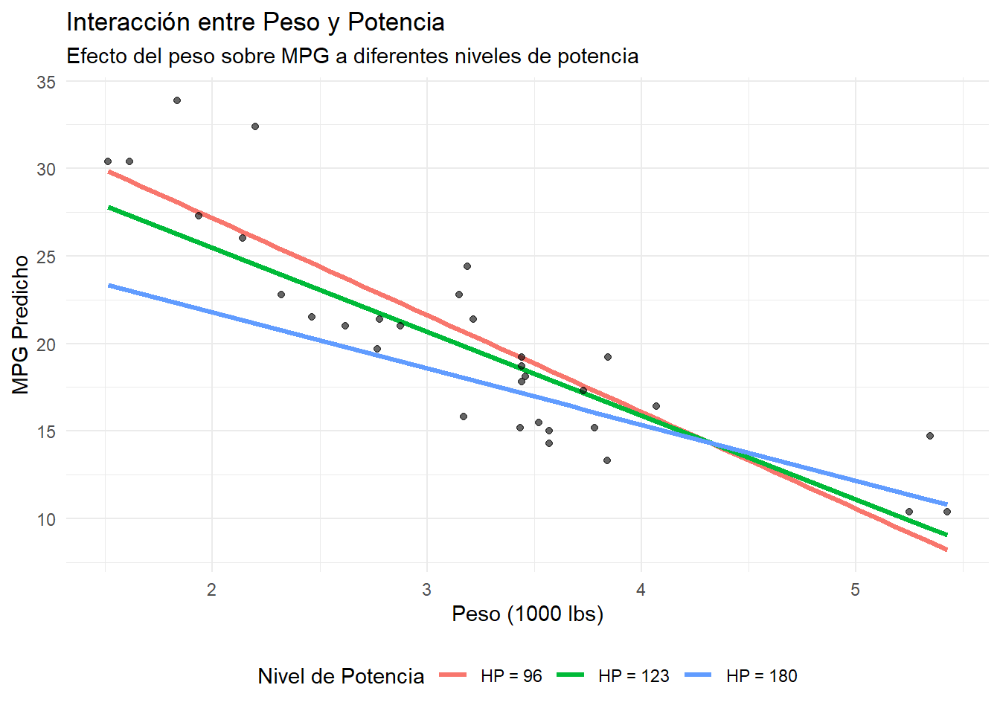

# Cargar librerías necesarias
library(tidyverse)
library(MASS)
library(car) # Para VIF y diagnósticos
library(corrplot) # Para matrices de correlación
library(leaps) # Para selección de variables
library(broom) # Para resultados ordenados
library(GGally) # Para gráficos de pares
library(caret) # Para validación cruzada
library(performance) # Para evaluación de modelos
set.seed(123)Laboratorio 3: Regresión Lineal Múltiple
Modelos Estadísticos de Predicción
Objetivos del Laboratorio
Al finalizar este laboratorio, serás capaz de:
- Ajustar modelos de regresión lineal múltiple
- Interpretar coeficientes en presencia de múltiples predictores
- Detectar y manejar problemas de multicolinealidad
- Realizar selección de variables con diferentes criterios
- Evaluar interacciones entre variables
- Validar modelos usando técnicas de validación cruzada
Configuración Inicial
Parte 1: Introducción a la Regresión Múltiple
Modelo Teórico
La regresión lineal múltiple extiende la regresión simple para incluir múltiples predictores:
\[Y = \beta_0 + \beta_1 X_1 + \beta_2 X_2 + \ldots + \beta_p X_p + \epsilon\]
Ejemplo Básico con mtcars
# Cargar datos
data(mtcars)
# Modelo simple vs múltiple
modelo_simple <- lm(mpg ~ wt, data = mtcars)
modelo_multiple <- lm(mpg ~ wt + hp + cyl, data = mtcars)
# Comparar modelos
cat("=== COMPARACIÓN DE MODELOS ===\n")=== COMPARACIÓN DE MODELOS ===cat("Modelo Simple - R²:", round(summary(modelo_simple)$r.squared, 3), "\n")Modelo Simple - R²: 0.753 cat("Modelo Múltiple - R²:", round(summary(modelo_multiple)$r.squared, 3), "\n")Modelo Múltiple - R²: 0.843 cat("Modelo Múltiple - R² Ajustado:", round(summary(modelo_multiple)$adj.r.squared, 3), "\n")Modelo Múltiple - R² Ajustado: 0.826 # Resumen del modelo múltiple
summary(modelo_multiple)
Call:
lm(formula = mpg ~ wt + hp + cyl, data = mtcars)
Residuals:
Min 1Q Median 3Q Max
-3.9290 -1.5598 -0.5311 1.1850 5.8986
Coefficients:
Estimate Std. Error t value Pr(>|t|)
(Intercept) 38.75179 1.78686 21.687 < 2e-16 ***
wt -3.16697 0.74058 -4.276 0.000199 ***
hp -0.01804 0.01188 -1.519 0.140015
cyl -0.94162 0.55092 -1.709 0.098480 .
---
Signif. codes: 0 '***' 0.001 '**' 0.01 '*' 0.05 '.' 0.1 ' ' 1
Residual standard error: 2.512 on 28 degrees of freedom
Multiple R-squared: 0.8431, Adjusted R-squared: 0.8263
F-statistic: 50.17 on 3 and 28 DF, p-value: 2.184e-11Interpretación de Coeficientes
# Extraer coeficientes y estadísticas
coef_df <- tidy(modelo_multiple)
print(coef_df)# A tibble: 4 × 5
term estimate std.error statistic p.value
<chr> <dbl> <dbl> <dbl> <dbl>
1 (Intercept) 38.8 1.79 21.7 4.80e-19
2 wt -3.17 0.741 -4.28 1.99e- 4
3 hp -0.0180 0.0119 -1.52 1.40e- 1
4 cyl -0.942 0.551 -1.71 9.85e- 2cat("\n=== INTERPRETACIÓN DE COEFICIENTES ===\n")
=== INTERPRETACIÓN DE COEFICIENTES ===cat("Intercepto:", round(coef_df$estimate[1], 2), "\n")Intercepto: 38.75 cat(" - MPG esperado cuando wt=0, hp=0, cyl=0 (extrapolación)\n\n") - MPG esperado cuando wt=0, hp=0, cyl=0 (extrapolación)cat("Peso (wt):", round(coef_df$estimate[2], 2), "\n")Peso (wt): -3.17 cat(" - Por cada 1000 lbs adicionales, MPG disminuye en", abs(round(coef_df$estimate[2], 2)),
"unidades, manteniendo hp y cyl constantes\n\n") - Por cada 1000 lbs adicionales, MPG disminuye en 3.17 unidades, manteniendo hp y cyl constantescat("Potencia (hp):", round(coef_df$estimate[3], 3), "\n")Potencia (hp): -0.018 cat(" - Por cada hp adicional, MPG disminuye en", abs(round(coef_df$estimate[3], 3)),
"unidades, manteniendo wt y cyl constantes\n\n") - Por cada hp adicional, MPG disminuye en 0.018 unidades, manteniendo wt y cyl constantescat("Cilindros (cyl):", round(coef_df$estimate[4], 2), "\n")Cilindros (cyl): -0.94 cat(" - Por cada cilindro adicional, MPG disminuye en", abs(round(coef_df$estimate[4], 2)),
"unidades, manteniendo wt y hp constantes\n") - Por cada cilindro adicional, MPG disminuye en 0.94 unidades, manteniendo wt y hp constantesParte 2: Análisis Exploratorio Multivariado
Matriz de Correlaciones
# Seleccionar variables numéricas relevantes
vars_interes <- mtcars[, c("mpg", "wt", "hp", "cyl", "disp", "qsec")]
# Matriz de correlación
cor_matrix <- cor(vars_interes)
print(round(cor_matrix, 3)) mpg wt hp cyl disp qsec
mpg 1.000 -0.868 -0.776 -0.852 -0.848 0.419
wt -0.868 1.000 0.659 0.782 0.888 -0.175
hp -0.776 0.659 1.000 0.832 0.791 -0.708
cyl -0.852 0.782 0.832 1.000 0.902 -0.591
disp -0.848 0.888 0.791 0.902 1.000 -0.434
qsec 0.419 -0.175 -0.708 -0.591 -0.434 1.000# Visualización de correlaciones
corrplot(cor_matrix, method = "color", type = "upper",
order = "hclust", tl.cex = 0.8, tl.col = "black",
addCoef.col = "black", number.cex = 0.7)
Gráficos de Pares
# Gráfico de pares con correlaciones
ggpairs(vars_interes,
title = "Matriz de Gráficos de Pares",
upper = list(continuous = wrap("cor", size = 3)),
lower = list(continuous = wrap("points", alpha = 0.7))) +
theme_minimal()
Parte 3: Multicolinealidad
Detección de Multicolinealidad
# Factor de Inflación de la Varianza (VIF)
vif_values <- vif(modelo_multiple)
cat("=== FACTOR DE INFLACIÓN DE LA VARIANZA (VIF) ===\n")=== FACTOR DE INFLACIÓN DE LA VARIANZA (VIF) ===print(vif_values) wt hp cyl
2.580486 3.258481 4.757456 cat("\nInterpretación del VIF:\n")
Interpretación del VIF:cat("- VIF < 5: No hay problema de multicolinealidad\n")- VIF < 5: No hay problema de multicolinealidadcat("- 5 ≤ VIF < 10: Multicolinealidad moderada\n")- 5 ≤ VIF < 10: Multicolinealidad moderadacat("- VIF ≥ 10: Multicolinealidad severa\n\n")- VIF ≥ 10: Multicolinealidad severafor(i in 1:length(vif_values)) {
var_name <- names(vif_values)[i]
vif_val <- vif_values[i]
if(vif_val < 5) {
status <- "OK"
} else if(vif_val < 10) {
status <- "Moderada"
} else {
status <- "Severa"
}
cat(var_name, ": VIF =", round(vif_val, 2), "(", status, ")\n")
}wt : VIF = 2.58 ( OK )
hp : VIF = 3.26 ( OK )
cyl : VIF = 4.76 ( OK )# Modelo con mayor multicolinealidad
modelo_colineal <- lm(mpg ~ wt + hp + cyl + disp, data = mtcars)
vif_colineal <- vif(modelo_colineal)
cat("\n=== MODELO CON MÁS VARIABLES (mayor multicolinealidad) ===\n")
=== MODELO CON MÁS VARIABLES (mayor multicolinealidad) ===print(round(vif_colineal, 2)) wt hp cyl disp
4.85 3.41 6.74 10.37 Manejo de Multicolinealidad
# Estrategia 1: Eliminar variables con VIF alto
# Identificar variable con VIF más alto
max_vif <- which.max(vif_colineal)
var_eliminar <- names(max_vif)
cat("Variable con VIF más alto:", var_eliminar, "=", round(vif_colineal[max_vif], 2), "\n")Variable con VIF más alto: disp = 10.37 # Modelo sin la variable problemática
formula_nueva <- as.formula(paste("mpg ~", paste(names(vif_colineal)[names(vif_colineal) != var_eliminar], collapse = " + ")))
modelo_reducido <- lm(formula_nueva, data = mtcars)
cat("\nVIF después de eliminar", var_eliminar, ":\n")
VIF después de eliminar disp :print(round(vif(modelo_reducido), 2)) wt hp cyl
2.58 3.26 4.76 # Comparar R² ajustado
cat("\nComparación de modelos:\n")
Comparación de modelos:cat("Modelo completo - R² ajustado:", round(summary(modelo_colineal)$adj.r.squared, 4), "\n")Modelo completo - R² ajustado: 0.8262 cat("Modelo reducido - R² ajustado:", round(summary(modelo_reducido)$adj.r.squared, 4), "\n")Modelo reducido - R² ajustado: 0.8263 Parte 4: Selección de Variables
Métodos Automáticos de Selección
# Preparar datos completos
data(mtcars)
mtcars_complete <- mtcars[, c("mpg", "cyl", "disp", "hp", "drat", "wt", "qsec", "vs", "am", "gear", "carb")]
# Método Forward
modelo_forward <- step(lm(mpg ~ 1, data = mtcars_complete),
scope = list(lower = ~ 1, upper = ~ cyl + disp + hp + drat + wt + qsec + vs + am + gear + carb),
direction = "forward", trace = FALSE)
# Método Backward
modelo_completo <- lm(mpg ~ cyl + disp + hp + drat + wt + qsec + vs + am + gear + carb, data = mtcars_complete)
modelo_backward <- step(modelo_completo, direction = "backward", trace = FALSE)
# Método Stepwise
modelo_stepwise <- step(lm(mpg ~ 1, data = mtcars_complete),
scope = list(lower = ~ 1, upper = ~ cyl + disp + hp + drat + wt + qsec + vs + am + gear + carb),
direction = "both", trace = FALSE)
# Comparar resultados
cat("=== COMPARACIÓN DE MÉTODOS DE SELECCIÓN ===\n")=== COMPARACIÓN DE MÉTODOS DE SELECCIÓN ===cat("Forward - Variables:", paste(names(coef(modelo_forward))[-1], collapse = ", "), "\n")Forward - Variables: wt, cyl, hp cat("Forward - AIC:", round(AIC(modelo_forward), 2), "\n\n")Forward - AIC: 155.48 cat("Backward - Variables:", paste(names(coef(modelo_backward))[-1], collapse = ", "), "\n")Backward - Variables: wt, qsec, am cat("Backward - AIC:", round(AIC(modelo_backward), 2), "\n\n")Backward - AIC: 154.12 cat("Stepwise - Variables:", paste(names(coef(modelo_stepwise))[-1], collapse = ", "), "\n")Stepwise - Variables: wt, cyl, hp cat("Stepwise - AIC:", round(AIC(modelo_stepwise), 2), "\n")Stepwise - AIC: 155.48 Selección por Criterios de Información
# Usar leaps para selección exhaustiva
regsubsets_result <- regsubsets(mpg ~ cyl + disp + hp + drat + wt + qsec + vs + am + gear + carb,
data = mtcars_complete, nvmax = 10)
# Resumen de resultados
reg_summary <- summary(regsubsets_result)
# Crear dataframe con métricas
selection_metrics <- data.frame(
n_vars = 1:length(reg_summary$rss),
RSS = reg_summary$rss,
R2 = reg_summary$rsq,
R2_adj = reg_summary$adjr2,
Cp = reg_summary$cp,
BIC = reg_summary$bic
)
print(selection_metrics) n_vars RSS R2 R2_adj Cp BIC
1 1 278.3219 0.7528328 0.7445939 11.6269926 -37.79462
2 2 191.1720 0.8302274 0.8185189 1.2187315 -46.34824
3 3 169.2859 0.8496636 0.8335561 0.1026357 -46.77320
4 4 160.0665 0.8578510 0.8367919 0.7899838 -45.09947
5 5 153.4378 0.8637377 0.8375334 1.8462076 -42.98713
6 6 150.0933 0.8667078 0.8347177 3.3700162 -40.22663
7 7 148.5283 0.8680976 0.8296261 5.1471984 -37.09630
8 8 147.8428 0.8687064 0.8230390 7.0496037 -33.77859
9 9 147.5743 0.8689448 0.8153314 9.0113719 -30.37102
10 10 147.4944 0.8690158 0.8066423 11.0000000 -26.92261# Encontrar mejores modelos según cada criterio
best_r2_adj <- which.max(selection_metrics$R2_adj)
best_cp <- which.min(selection_metrics$Cp)
best_bic <- which.min(selection_metrics$BIC)
cat("\n=== MEJORES MODELOS POR CRITERIO ===\n")
=== MEJORES MODELOS POR CRITERIO ===cat("Mejor R² ajustado: modelo con", best_r2_adj, "variables\n")Mejor R² ajustado: modelo con 5 variablescat("Mejor Cp: modelo con", best_cp, "variables\n")Mejor Cp: modelo con 3 variablescat("Mejor BIC: modelo con", best_bic, "variables\n")Mejor BIC: modelo con 3 variables# Variables en el mejor modelo por BIC
coef_bic <- coef(regsubsets_result, best_bic)
cat("\nVariables en el mejor modelo (BIC):", paste(names(coef_bic)[-1], collapse = ", "), "\n")
Variables en el mejor modelo (BIC): wt, qsec, am Visualización de Criterios de Selección
# Gráficos de criterios de selección
par(mfrow = c(2, 2))
# R² ajustado
plot(selection_metrics$n_vars, selection_metrics$R2_adj,
type = "b", xlab = "Número de Variables", ylab = "R² Ajustado",
main = "R² Ajustado vs Número de Variables")
points(best_r2_adj, selection_metrics$R2_adj[best_r2_adj], col = "red", pch = 19, cex = 1.5)
# Cp
plot(selection_metrics$n_vars, selection_metrics$Cp,
type = "b", xlab = "Número de Variables", ylab = "Cp",
main = "Cp vs Número de Variables")
abline(a = 0, b = 1, col = "red", lty = 2)
points(best_cp, selection_metrics$Cp[best_cp], col = "red", pch = 19, cex = 1.5)
# BIC
plot(selection_metrics$n_vars, selection_metrics$BIC,
type = "b", xlab = "Número de Variables", ylab = "BIC",
main = "BIC vs Número de Variables")
points(best_bic, selection_metrics$BIC[best_bic], col = "red", pch = 19, cex = 1.5)
# RSS
plot(selection_metrics$n_vars, selection_metrics$RSS,
type = "b", xlab = "Número de Variables", ylab = "RSS",
main = "RSS vs Número de Variables")
par(mfrow = c(1, 1))Parte 5: Interacciones entre Variables
Modelos con Interacciones
# Modelo con interacción
modelo_interaccion <- lm(mpg ~ wt + hp + wt:hp, data = mtcars)
# Comparar con modelo sin interacción
modelo_sin_interaccion <- lm(mpg ~ wt + hp, data = mtcars)
# Resúmenes
cat("=== MODELO SIN INTERACCIÓN ===\n")=== MODELO SIN INTERACCIÓN ===print(summary(modelo_sin_interaccion)$coefficients) Estimate Std. Error t value Pr(>|t|)
(Intercept) 37.22727012 1.59878754 23.284689 2.565459e-20
wt -3.87783074 0.63273349 -6.128695 1.119647e-06
hp -0.03177295 0.00902971 -3.518712 1.451229e-03cat("\n=== MODELO CON INTERACCIÓN ===\n")
=== MODELO CON INTERACCIÓN ===print(summary(modelo_interaccion)$coefficients) Estimate Std. Error t value Pr(>|t|)
(Intercept) 49.80842343 3.60515580 13.815887 5.005761e-14
wt -8.21662430 1.26970814 -6.471270 5.199287e-07
hp -0.12010209 0.02469835 -4.862758 4.036243e-05
wt:hp 0.02784815 0.00741958 3.753332 8.108307e-04# Test F para la interacción
anova_test <- anova(modelo_sin_interaccion, modelo_interaccion)
print(anova_test)Analysis of Variance Table
Model 1: mpg ~ wt + hp
Model 2: mpg ~ wt + hp + wt:hp
Res.Df RSS Df Sum of Sq F Pr(>F)
1 29 195.05
2 28 129.76 1 65.286 14.088 0.0008108 ***
---
Signif. codes: 0 '***' 0.001 '**' 0.01 '*' 0.05 '.' 0.1 ' ' 1cat("\nInterpretación de la interacción:\n")
Interpretación de la interacción:coef_int <- coef(modelo_interaccion)
cat("- Cuando hp = 0, el efecto de wt es:", round(coef_int[2], 3), "\n")- Cuando hp = 0, el efecto de wt es: -8.217 cat("- Por cada unidad adicional de hp, el efecto de wt cambia en:", round(coef_int[4], 5), "\n")- Por cada unidad adicional de hp, el efecto de wt cambia en: 0.02785 Visualización de Interacciones
# Crear datos para visualización
wt_range <- range(mtcars$wt)
hp_levels <- quantile(mtcars$hp, c(0.25, 0.5, 0.75))
# Generar predicciones
pred_data <- expand.grid(
wt = seq(wt_range[1], wt_range[2], length.out = 50),
hp = hp_levels
)
pred_data$mpg_pred <- predict(modelo_interaccion, newdata = pred_data)
pred_data$hp_level <- factor(pred_data$hp,
levels = hp_levels,
labels = paste("HP =", round(hp_levels)))
# Gráfico de interacción
ggplot(pred_data, aes(x = wt, y = mpg_pred, color = hp_level)) +
geom_line(size = 1.2) +
geom_point(data = mtcars, aes(x = wt, y = mpg),
color = "black", alpha = 0.6, inherit.aes = FALSE) +
labs(title = "Interacción entre Peso y Potencia",
subtitle = "Efecto del peso sobre MPG a diferentes niveles de potencia",
x = "Peso (1000 lbs)", y = "MPG Predicho",
color = "Nivel de Potencia") +
theme_minimal() +
theme(legend.position = "bottom")
Parte 6: Validación de Modelos
Validación Cruzada
# Configurar validación cruzada
set.seed(123)
train_control <- trainControl(method = "cv", number = 10)
# Modelo final seleccionado
formula_final <- mpg ~ wt + qsec + am
modelo_final <- lm(formula_final, data = mtcars)
# Validación cruzada con caret
cv_results <- train(formula_final, data = mtcars,
method = "lm", trControl = train_control)
print(cv_results)Linear Regression
32 samples
3 predictor
No pre-processing
Resampling: Cross-Validated (10 fold)
Summary of sample sizes: 28, 28, 29, 29, 29, 30, ...
Resampling results:
RMSE Rsquared MAE
2.546715 0.8218136 2.212952
Tuning parameter 'intercept' was held constant at a value of TRUE# Métricas de validación cruzada
cat("=== VALIDACIÓN CRUZADA (10-fold) ===\n")=== VALIDACIÓN CRUZADA (10-fold) ===cat("RMSE promedio:", round(cv_results$results$RMSE, 3), "\n")RMSE promedio: 2.547 cat("R² promedio:", round(cv_results$results$Rsquared, 3), "\n")R² promedio: 0.822 cat("MAE promedio:", round(cv_results$results$MAE, 3), "\n")MAE promedio: 2.213 Comparación Final de Modelos
# Lista de modelos a comparar
modelos <- list(
"Simple" = lm(mpg ~ wt, data = mtcars),
"Múltiple_Básico" = lm(mpg ~ wt + hp + cyl, data = mtcars),
"Seleccionado" = modelo_final,
"Con_Interacción" = modelo_interaccion
)
# Función para extraer métricas
extraer_metricas <- function(modelo) {
summ <- summary(modelo)
return(data.frame(
R2 = summ$r.squared,
R2_adj = summ$adj.r.squared,
RMSE = sqrt(mean(residuals(modelo)^2)),
AIC = AIC(modelo),
BIC = BIC(modelo),
n_params = length(coef(modelo))
))
}
# Calcular métricas para todos los modelos
comparacion <- do.call(rbind, lapply(modelos, extraer_metricas))
rownames(comparacion) <- names(modelos)
cat("=== COMPARACIÓN FINAL DE MODELOS ===\n")=== COMPARACIÓN FINAL DE MODELOS ===print(round(comparacion, 3)) R2 R2_adj RMSE AIC BIC n_params
Simple 0.753 0.745 2.949 166.029 170.427 2
Múltiple_Básico 0.843 0.826 2.349 155.477 162.805 4
Seleccionado 0.850 0.834 2.300 154.119 161.448 4
Con_Interacción 0.885 0.872 2.014 145.611 152.940 4# Identificar el mejor modelo
cat("\n=== RECOMENDACIONES ===\n")
=== RECOMENDACIONES ===mejor_r2_adj <- which.max(comparacion$R2_adj)
mejor_aic <- which.min(comparacion$AIC)
mejor_bic <- which.min(comparacion$BIC)
cat("Mejor R² ajustado:", rownames(comparacion)[mejor_r2_adj], "\n")Mejor R² ajustado: Con_Interacción cat("Mejor AIC:", rownames(comparacion)[mejor_aic], "\n")Mejor AIC: Con_Interacción cat("Mejor BIC:", rownames(comparacion)[mejor_bic], "\n")Mejor BIC: Con_Interacción Parte 7: Ejercicios Prácticos
Ejercicio 1: Dataset Boston Housing
# Cargar dataset Boston
data(Boston)
# Objetivo: Predecir 'medv' (valor de vivienda)
# Variables disponibles: crim, zn, indus, chas, nox, rm, age, dis, rad, tax, ptratio, black, lstat
# Tareas:
# 1. Realizar análisis exploratorio (correlaciones, gráficos de pares)
# 2. Ajustar modelo completo y evaluar multicolinealidad
# 3. Usar selección de variables para encontrar el mejor modelo
# 4. Evaluar interacciones relevantes
# 5. Validar el modelo final
# Tu código aquí:
# Ejemplo de inicio:
head(Boston) crim zn indus chas nox rm age dis rad tax ptratio black lstat
1 0.00632 18 2.31 0 0.538 6.575 65.2 4.0900 1 296 15.3 396.90 4.98
2 0.02731 0 7.07 0 0.469 6.421 78.9 4.9671 2 242 17.8 396.90 9.14
3 0.02729 0 7.07 0 0.469 7.185 61.1 4.9671 2 242 17.8 392.83 4.03
4 0.03237 0 2.18 0 0.458 6.998 45.8 6.0622 3 222 18.7 394.63 2.94
5 0.06905 0 2.18 0 0.458 7.147 54.2 6.0622 3 222 18.7 396.90 5.33
6 0.02985 0 2.18 0 0.458 6.430 58.7 6.0622 3 222 18.7 394.12 5.21
medv
1 24.0
2 21.6
3 34.7
4 33.4
5 36.2
6 28.7dim(Boston)[1] 506 14# Continúa el análisis...Ejercicio 2: Análisis de Ventas
# Crear dataset simulado de ventas
set.seed(456)
n <- 200
# Variables predictoras
inversion_marketing <- rnorm(n, 50, 15)
precio <- rnorm(n, 100, 20)
competencia <- sample(c("Baja", "Media", "Alta"), n, replace = TRUE)
estacion <- sample(c("Primavera", "Verano", "Otoño", "Invierno"), n, replace = TRUE)
# Variable dependiente (ventas) con interacciones
comp_numeric <- as.numeric(factor(competencia, levels = c("Baja", "Media", "Alta")))
est_numeric <- as.numeric(factor(estacion))
ventas <- 20 + 0.8*inversion_marketing - 0.3*precio - 10*comp_numeric +
5*est_numeric + 0.01*inversion_marketing*precio + rnorm(n, 0, 10)
datos_ventas <- data.frame(
ventas = ventas,
marketing = inversion_marketing,
precio = precio,
competencia = competencia,
estacion = estacion
)
# Tareas:
# 1. Ajustar modelo con todas las variables
# 2. Evaluar si las interacciones son significativas
# 3. Interpretar coeficientes de variables categóricas
# 4. Realizar predicciones para nuevos escenarios
# Tu código aquí:
head(datos_ventas) ventas marketing precio competencia estacion
1 44.32760 29.84718 105.87772 Media Otoño
2 122.92670 59.32663 121.04804 Media Verano
3 78.19759 62.01312 99.87129 Media Otoño
4 26.99141 29.16661 91.90953 Baja Invierno
5 26.84792 39.28465 98.38166 Alta Otoño
6 58.65062 45.13908 78.55151 Alta PrimaveraEjercicio 3: Análisis Comparativo
# Usar dataset airquality
data(airquality)
airquality_clean <- na.omit(airquality)
# Objetivo: Predecir Ozone usando diferentes combinaciones de variables
# Variables: Solar.R, Wind, Temp, Month, Day
# Tareas:
# 1. Comparar modelos con 1, 2, 3, y todas las variables
# 2. Evaluar cual tiene mejor capacidad predictiva
# 3. Verificar supuestos del mejor modelo
# 4. Realizar validación cruzada
# Tu código aquí:Parte 8: Conceptos Clave para Recordar
Interpretación en Regresión Múltiple
- Los coeficientes se interpretan manteniendo constantes las demás variables
- El R² ajustado penaliza la inclusión de variables irrelevantes
- La multicolinealidad inflata los errores estándar y hace inestables los coeficientes
Selección de Variables
- Forward: Empieza con modelo vacío y añade variables
- Backward: Empieza con modelo completo y elimina variables
- Stepwise: Combina forward y backward
- Criterios: AIC (menor es mejor), BIC (más conservador), R² ajustado (mayor es mejor)
Interacciones
- Una interacción significa que el efecto de una variable depende del valor de otra
- Se incluyen como productos de las variables:
X1:X2oX1*X2 - Siempre incluir los efectos principales cuando hay interacciones
Validación
- Validación cruzada estima el rendimiento en datos no vistos
- RMSE mide el error de predicción promedio
- Comparar modelos usando métricas fuera de muestra
Próximo Laboratorio
En el Laboratorio 4 exploraremos temas avanzados incluyendo regresión polinomial, regularización, y diagnósticos avanzados.